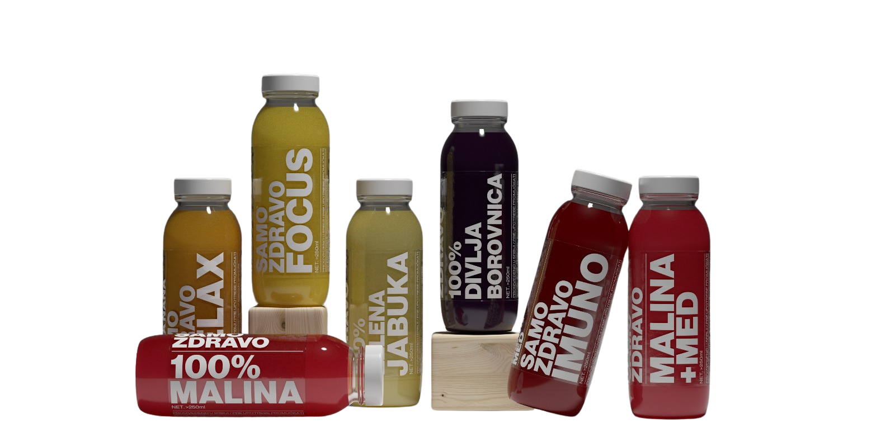

O NAMA
SAZNAJ VIŠE
Naša Priča
Brend Samo Zdravo nastao je iz stvarne potrebe da ljudima ponudimo jednostavan i prirodan način da podrže svoje zdravlje, čak i u ubrzanom životnom tempu. Ideja se rodila kroz rad sa klijentima koji su želeli brzo, praktično i lako rešenje za zdravu ishranu, ali sa stvarnim zdravstvenim efektom.
Kroz ovu svakodnevnu interakciju shvatio sam da zdrava ishrana ne mora da bude komplikovana ili dosadna – ona može biti praktična, ukusna i prilagođena životnom ritmu. Ideja je bila jednostavna – zašto ne bismo uradili nešto dobro za svoje telo dok smo na poslu, u pokretu ili u omiljenom kafiću, bez komplikacija i odricanja.
Naša Smoothie Linija
Na osnovu toga razvili smo smoothie liniju sa jasno definisanim funkcijama:
- Imuno – podrška organizmu kod umora, pada energije i anemije
- Relax – opuštanje i smanjenje stresa
- Focus – poboljšanje koncentracije i mentalne jasnoće
- Divlja borovnica – prirodna antioksidativna zaštita i vitalnost
- Zelena jabuka i Malina – prirodan izvor energije i vitamina
Svaki sastojak u našim smoothie-jima ima jasan razlog zašto je tu. Pažljivo biramo najkvalitetnije prirodne namirnice, bez dodatka vode ili veštačkih zaslađivača, kako bismo zadržali prirodan ukus i nutritivne vrednosti.
Naša Filozofija
Samo Zdravo je produžetak naše filozofije: zdrava ishrana i uživanje mogu ići ruku pod ruku, a zdravo ne znači dosadno ili bezukusno. Naš cilj je da u svakom gutljaju ljudi dobiju energiju, vitalnost i uživanje, bez kompromisa.
O Osnivaču
Zovem se Mladen Dakić, spec. struk. nutricionista–dijetetičar, sa višegodišnjim iskustvom u radu u zdravstvenim, rehabilitacionim i sportskim sistemima i osnivač sam brenda Samo Zdravo.
Zaposlen sam u Specijalnoj bolnici za rehabilitaciju „Gornja Trepča", a angažovan kao stručni konsultant za ishranu u Poliklinici Park (Čačak) i Poliklinici Prima Medika (Gornji Milanovac), i kao stručni saradnik u PU „Sunce" u Gornjem Milanovcu.
Svoje stručno iskustvo sticao sam kroz praksu u Domu zdravlja Zemun, KBC Zemun, kao i u sportskom sistemu FK Crvena zvezda. Više od 25 godina sam u sportu, a preko 10 godina profesionalno radim u oblasti ishrane, što mi omogućava da znanje prilagodim realnim životnim i zdravstvenim potrebama ljudi sa kojima radim.
Zašto drugačije?
Zdrava ishrana ne treba da bude kazna niti stalna borba sa hranom. Ona je alat koji pomaže da se osećate bolje, imate više energije i da svoje ciljeve postignete bez stresa i odricanja.
U svom radu fokusiram se na:
- održive promene
- individualni pristup
- praktična rešenja koja se mogu dugoročno primeniti
Ishranu ne prilagođavam teoriji, već osobi, što znači:
- bez gladovanja
- bez „zabranjenih namirnica zauvek"
- bez komplikovanih recepata
- bez lažnih obećanja
Radim sa onim što osoba realno može da konzumira, pripremi i poštuje, uz uvažavanje zdravstvenog stanja, posla, navika i ličnih ukusa.
Moj Cilj
Moj cilj nije savršena ishrana na papiru, već plan koji možete da živite svaki dan.
Ovakav pristup je i osnova filozofije brenda Samo Zdravo – jednostavno, prirodno i primenljivo u svakodnevnom životu.